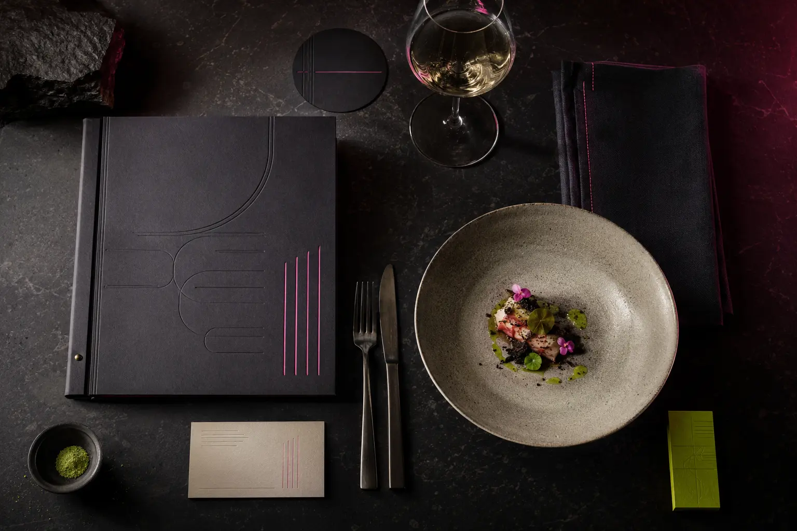

← Todos los proyectos
Concepto · Sistema visual
Restaurant Editorial
Una exploración conceptual donde el espacio, la carta y la mesa forman una misma narrativa.

- Áreas
- Concepto, identidad, diseño editorial
- Sector
- Gastronomía
- Enfoque
- Atmósfera y sistema de contacto
La idea
Una identidad que también se saborea
El concepto parte del contraste: una atmósfera profunda y táctil atravesada por acentos eléctricos. El color no decora; marca recorridos, jerarquías y momentos de la experiencia.
La carta, los materiales impresos y el lenguaje espacial se organizan como capítulos de una misma historia.

Siguiente caso